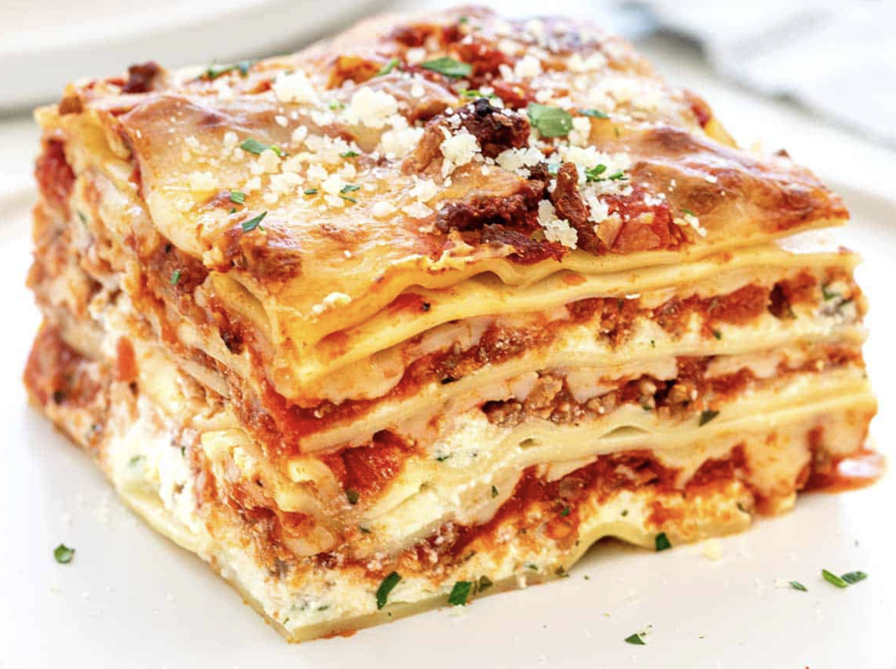

Lasagna

This recipe
is easy to make but not so healthy. Some of it's ingredients might promote inflammation in some consumers.
Ingredients
- Lasagna layers
- Goat cheese
- Cilantro
- Tomatoe sauce
- Spinach
Steps for cooking:
- Lay the pasta / lasagna layers on a glass surface resitant to high temperatures.
- Chop the vegetables in small pieces and put them on the layers alongside the goat cheese.
- Put the pan in the oven for 35-40 minutes.